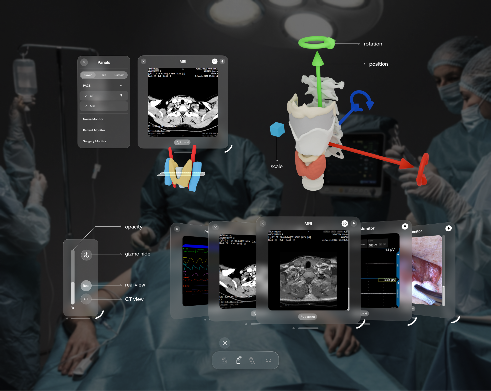
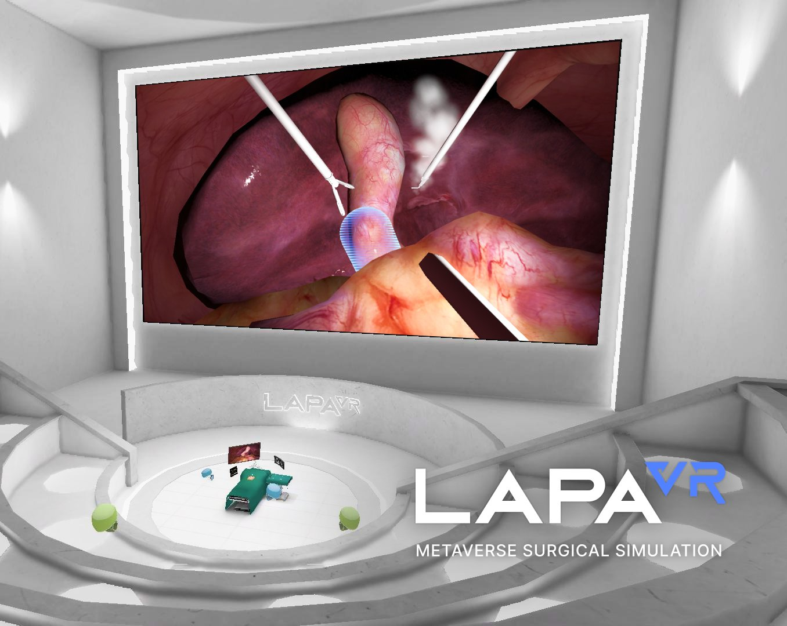
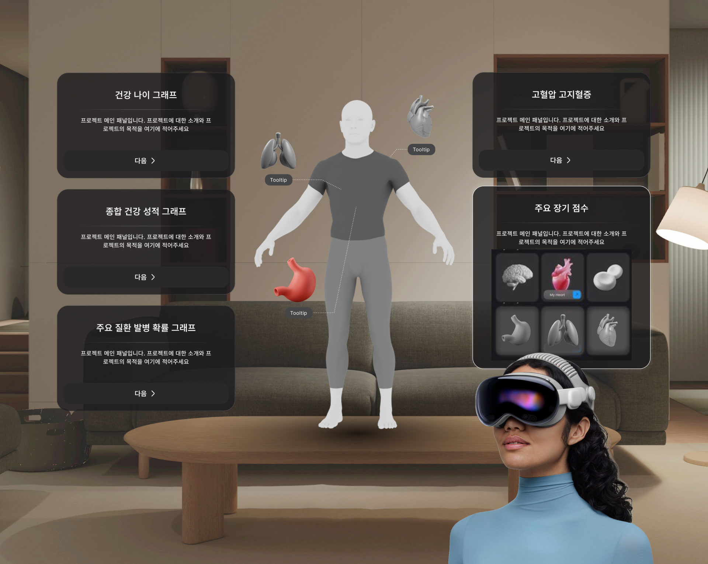

Yejin is a Seoul-based product designer working at the intersection of medical XR, human factors, and high-stakes clinical environments. Currently, she designs SW/HW interfaces for surgical simulation and clinical UX at Seoul National University Hospital’s Department of Convergence Medicine, building VR training systems and MR tools used across peri-, intra-, and post-operative care, with a growing interest in human–robot interaction in surgery. She is pursuing a master’s in Smart Experience Design at Kookmin University and a regulatory science (RA) certification, moving toward design grounded in medical device safety and regulation.
MR Surgical Assistant
VISIONOS
SPATIAL UI
SURGICAL WORKFLOW
A touch-free Apple Vision Pro assistant that brings imaging, patient data, and checklists into the surgeon’s view across pre-, intra-, and post-operative care.

LAPA VR
SPATIAL UI
SURGICAL SIM
CLINICAL UX
A VR surgical simulator that breaks laparoscopic cholecystectomy into guided, step-by-step tasks, so trainees can rehearse the procedure safely and repeatedly.

MR Health Screening
PREVENTIVE CARE
BEHAVIORAL UX
VISION PRO
A mixed reality health-screening questionnaire on Apple Vision Pro, designed to make patients’ self-reports more accurate and less burdensome than conventional forms.

Additional Work · Unpublished
Design System
XR Design System & UX Guidelines
A shared visual language, component library, and UX guidelines for the lab’s XR products, built to keep interfaces consistent and speed up development across teams.
Design Ops
Design System
Onboarding-to-Offboarding Module
A reusable module deployed across the lab’s XR systems to shorten first-time users’ learning curve, guiding them from entering the experience to leaving it.
XR · Usability
Clinical Tool
Photo-based Volume Tracking for Plastic Surgery
An outpatient support tool that estimates soft-tissue volume change from simple clinical photos, helping clinicians track how much volume has decreased between visits.
With SNUH Department of Plastic and Reconstructive Surgery
Plastic Surgery
Training Simulator
Rapid Deployment Aortic Valve Replacement (RDAVR) VR
A step-by-step procedural VR simulator for rapid deployment aortic valve replacement, iterated through pilot usability testing.
With SNUH Department of Thoracic and Cardiovascular Surgery
Cardiothoracic Surgery
Training Simulator
Cardiopulmonary Bypass (CPB) VR
A procedural VR simulator for training the cardiopulmonary bypass workflow.
With SNUH Department of Thoracic and Cardiovascular Surgery
Cardiothoracic Surgery
Training Simulator
TMJ Arthroscopy VR
A VR training system for temporomandibular joint arthroscopy, pairing virtual procedures with 3D-printed physical instruments.
With Department of Oral and Maxillofacial Surgery, Seoul National University Dental Hospital
Oral & Maxillofacial Surgery
Training Simulator
Intern Emergency Response VR
Scenario-based VR training for SNUH interns on in-hospital emergencies such as anaphylaxis and oxygen desaturation.
With Office of Medical Education, Seoul National University College of Medicine
Medical Education
Training Simulator
Neonatal Resuscitation (NRP) VR
A VR system for practicing the stepwise Neonatal Resuscitation Program protocol.
With SNUH Department of Pediatrics
Neonatology
Training Simulator
Surgical Hand Scrub VR
A VR education system for surgical hand scrubbing, evaluated through a randomized controlled trial.
With SNUH Department of Pediatric Surgery
Surgical Education
Assessment
Metaverse-based Medical Licensing Examination
A VR system for assessing clinical performance in the national medical licensing examination within a metaverse environment.
With Office of Medical Education, Seoul National University College of Medicine
Medical Education
Service Design
Perioperative Service Design Workshop
Facilitated a service design workshop with SNUH researchers to surface and discuss problems across pre-, intra-, and post-operative care.
Workshop
Publications & Presentations
Journal Article
Korean Journal of Medical Education
38(2), 2026
38(2), 2026
Extended Abstract
ACM CHI EA ’26
Adjunct Paper
IEEE ISMAR-Adjunct 2025
Poster
CDE 2026
Poster
CDE 2026
Poster
MEDINFO 2025
Poster
Medical Metaverse Society 2025